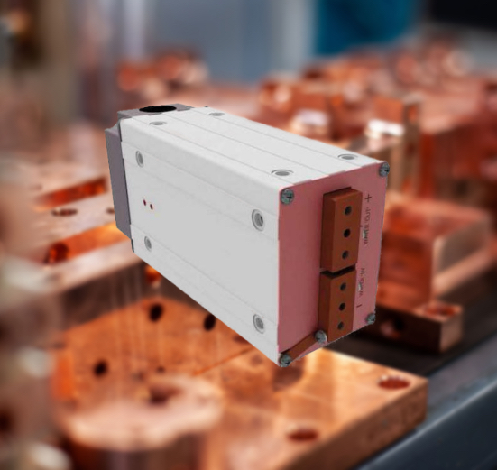

RoMan Manufacturing
저항용접
Resistance Welding
저항용접 분야에서는 안정적인 고전류 공급과 정밀한 전류 제어가 핵심입니다. MFDC, AC, DC/Low-Frequency 계열의 전원 및 변압기 솔루션은 소형 스폿용접부터 대형 프로젝션 용접까지 다양한 공정 요구에 대응할 수 있습니다.
Resistance welding applications require stable high-current delivery and precise current control. Power-supply and transformer solutions in MFDC, AC, and DC/low-frequency configurations can support a wide range of processes, from small spot welds to larger projection-welding applications.
용접 제어기, 건, 로봇 시스템 및 자동화 설비와의 연계가 중요하며, 자동차 및 일반 산업용 생산 라인 모두에서 활용될 수 있습니다.
Integration with welding controls, weld guns, robotic systems, and automated equipment is important, making this category relevant to both automotive and general industrial production lines.
저항용접Resistance Welding로봇용접Robotic Systems자동차Automotive
제품 자세히 보기View Product Details›